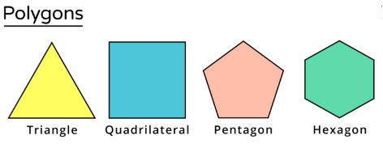

Understanding Quadrilaterals – Introduction
What is a Quadrilateral?
A
quadrilateral is any shape that has:
- 4 sides
- 4 angles
- 4 corners (vertices)
In daily life, we see many quadrilaterals like windows, books, kites, and rectangles.
“Quad” means four. So any closed figure with 4 straight sides is a quadrilateral.
Figure 1: Some quadrilaterals around us :
Main Features of a Quadrilateral
Every quadrilateral:
- Has 4 sides (all are straight)
- Has 4 corners (vertices : where 2 sides meet)
- Has 4 angles (the space between 2 sides)
- Has 2 diagonals (lines joining opposite corners)
Figure 2: A Quadrilateral and Its Parts
Example: In quadrilateral ABCD
- Sides: AB, BC, CD, DA
- Angles: ∠A, ∠B, ∠C, ∠D
- Diagonals: AC and BD
Polygons and Quadrilaterals
A
polygon is a simple closed figure made by joining straight lines.
Examples of polygons:
- Triangle – 3 sides
- Quadrilateral – 4 sides
- Pentagon – 5 sides
- Hexagon – 6 sides
Figure 3: Polygons with different numbers of sides
(Triangle, Quadrilateral, Pentagon, Hexagon)

Important to Remember
- All quadrilaterals are polygons.
- But not all polygons are quadrilaterals.
(Polygons may have more or fewer sides than 4.)
- A quadrilateral always has exactly 4 sides.
Summary:
Quadrilaterals are four-sided polygons we see in daily life.
They have 4 sides, 4 angles, 4 vertices, and 2 diagonals.
Understanding quadrilaterals helps us classify shapes and study their properties.